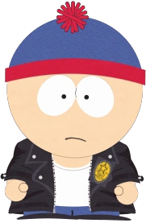
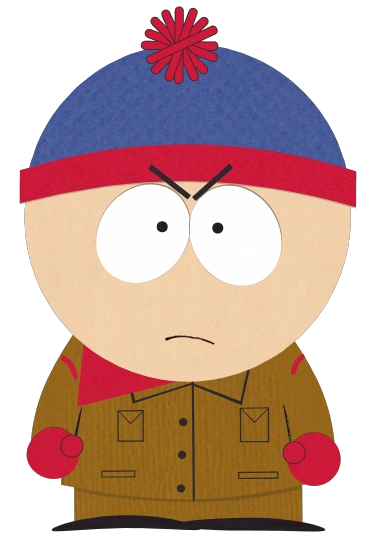
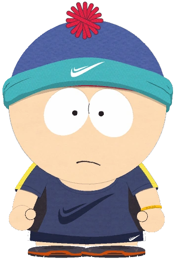

Generally
Stanley "Stan" Marsh is one of South Park's main characters along with Kyle Broflovski, Eric Cartman, and Kenny McCormick.
Stan attends South Park Elementary as part of Mr. Garrison's Fourth Grade Class (formerly Third). Stan's father Randy is a geologist, and his mother Sharon is a secretary at Tom's Rhinoplasty. He briefly had a step-father in "Clubhouses", named Roy.
Appearance

Stan is mostly shown wearing a brown jacket with a red collar, a blue hat with a red puffball and rim, and blue jeans. Under his jacket, he either wears a red and blue baseball shirt or a white T-shirt/v-neck. He also wears a blue Terrance and Phillip shirt to bed and a green suit for special occasions. In some episodes, it is clear he has black hair (like his father Randy) when his hat is partially or completely removed - this was first seen in "A Very Crappy Christmas".
All of the boys' hats are removed and their hair is seen for an extended period during the shower room scene in "Lil' Crime Stoppers", although Kenny's head is only seen from behind. Stan also apparently has blue eyes, as noted by Kyle when Butters draws their cartoon forms in "A Very Crappy Christmas", but this is uncertain, because Kyle said it was similar because he had a sharper nose, so it could have been a mistake.
In "Good Times with Weapons", he was portrayed with brown eyes, so odds are it was Butters' error when his eyes were blue. Even at a young age, Stan has always worn his red and blue hat (as shown in "Pre-School") and even sleeps with it on.
In "The List", he ranked third in the initial corrupt list of which boy was cutest. However, he was not mentioned among those who had to change places due to the corruption, so it is possible that he remained the third cutest boy, behind Clyde (who was actually in the bottom five somewhere) and Tolkien.
In the original Christmas short, he had a different appearance; his hat was the same, but it was fully red, he also had a dot as a nose and his jacket was blue.
In the future timeline set in South Park: Post Covid, his hair is graying on the sides, and he has a five-o' clock shadow. He wears a red long-sleeved shirt with brown vest, blue pants, and black shoes.
Personality
Stan is generally the most tender and sensitive of the four boys. For example, in "Kenny Dies", he finds it difficult to see Kenny in his ill state, and in "Raisins" he becomes depressed after losing his girlfriend to Tolkien. Also, in "Fun with Veal", Stan is the only one who stopped eating meat completely when the boys found that veal was actually "tortured baby cow meat". However, in some episodes he does not seem to care when people die, as in "Dances with Smurfs" and "Chef Goes Nanners".
Stan is often very moral. This is evident in "Cherokee Hair Tampons", when he, Kenny, Timmy, and Butters challenged the character Miss Information and her shop of alternative medicine, in "Super Best Friends", when he helped battle David Blaine's suicidal cult, and in "The Biggest Douche in the Universe" where he accuses the psychic medium, John Edward, of being a fake. In this episode he also gained possession of his own show (while trying to prove that cold reading was fake) and battled with John Edward in a "Psychic Showdown".
He also showed some heroism in "Cherokee Hair Tampons" by stating he would gladly donate a kidney to Kyle, even if it "hurt a whole lot". In "Whale Whores", he was also the only one in South Park to stand up and help whales and dolphins that were being slaughtered by the Japanese. He was angry that the cast of Whale Wars was not doing enough to help whales and dolphins and took matters into his own hands. It also shows Stan is a whale and dolphin lover and he tells the Japanese that it was a cow and a chicken that nuked Hiroshima, not a whale and a dolphin, in order to save them all being wiped out by the Japanese.
He is usually the one who is unaffected by the many scams, cults, and mass influences that South Park has been subjected to, and has a knack for seeing through falsely glorified practices and celebrities. In "Trapped in the Closet" and "Ass Burgers", he is the only one of the boys shown to believe in scams, cults, and that an alien makes everyone see things normal. Conversely, sometimes Kyle takes on this role, and it is Stan who is the gullible one, such as in "Chinpokomon", or the metrosexual trend in "South Park is Gay!".
However, Stan has been shown to have an overwhelmingly clearer understanding of scams and corporate corruption than anyone else in South Park, and has an especially good grasp of the dangers of cults. It is notable that he has a tendency to ridicule, make enemies out of, and/or bring shame to a very large number of celebrities that are shown in a poor light within the show. This may be because his father (Stan's major adult influence) has shown to be rather incompetent and immature, so Stan is suspicious and distrustful of adults.
Stan and Kyle's personalities tend to be similar, especially in the earlier seasons, but are not quite interchangeable, and they have developed more distinct and complex personalities during the show's run. Still, they are considered the closest friends out of the four, though Cartman and Kenny do not have a close bond of their own.
Stan's depression is also a recurring theme throughout the show. He became terribly depressed when Wendy broke up with him in "Raisins", briefly joining the Goth Kids. Stan also became incredibly depressed and adopted a cynical world view in "You're Getting Old" and "Ass Burgers", where everything to him literally sounded and looked "like shit". In "Ass Burgers", he uses alcohol to make the world seem happier.
Stan may suffer from asthma, as an inhaler was shown among the things Cartman claims in "Sexual Harassment Panda", although this was never mentioned in the series again.
Stan is an avid animal lover - he gets a dog in "Big Gay Al's Big Gay Boat Ride". He resists the influence of his uncle Jimbo to hunt in "Volcano" (he mentions this in "Death"), became a P.E.T.A. member in "Douche and Turd" (although he had the choice of joining them or being killed), tried to save baby cows in "Fun with Veal", and attempted to return a goat to its rightful owners in "Osama bin Laden Has Farty Pants". Although well-intentioned, these interventions often lead him and his friends into serious trouble. Stan (as well as the rest of the boys from 4th grade) also went to Mexico and managed to get the Mexican Space Program to take an orca to the moon in a bid to save it (with all the kids in South Park having been led to believe he was a killer whale from the moon) in "Free Willzyx". In "Two Days Before the Day After Tomorrow", after he and Cartman crash a boat into a beaver dam and swim to shore, seeing the boat blow up, Stan says, "I hope we didn't hurt any beavers." In "Fun with Veal" he briefly turned to vegetarianism, but he quickly gave it up when he was plagued by a disease that literally "turned him into a pussy", sprouting actual vaginas on his body, a disease called Vaginitis. He also sets out to save the whales and dolphins from the Japanese in "Whale Whores". It is revealed in "Rainforest Shmainforest" that he is afraid of snakes.
Stan is shown to sympathize with others, most evidently seen in "ManBearPig", in which he partially defends Al Gore because he feels sorry for him, due to him "not having any friends". However, when this pity backfires and lands him in a cave where Al Gore almost (unintentionally) drowns him, Kyle, Cartman, and Kenny, he lashes out and brings Al Gore into a cold, hard reality, shouting, "Stay away from us, asshole! I only felt sorry for you because you didn't have any friends! But now I know why you don't have any friends! You just use Manbearpig as a way of getting attention for yourself because you're a loser!" This does not affect Al Gore, however, as he dons a cape and says he will go and make a movie starring himself (An Inconvenient Truth). Ironically, Al Gore is also responsible for the deaths of Stan and everyone else in "Imaginationland, Episode III", even though they were revived by Butters.
When angered, Stan is often quite reluctant to continue/do anything that will further contribute to the obscurity or direness of the situation. This is shown in "Woodland Critter Christmas" after he finds out the Critters, whom he helped, were giving birth to the Anti-Christ, he decided not to attempt to set things right (although did eventually after much nagging from the episode's narrator) also in this episode, we found out that Stan was a Christian. Technically, though, this was not him - just a fictional version of him created by Eric Cartman for his Christmas story. For the first seven seasons of the show, Stan's sporadic girlfriend was Wendy Testaburger. In the early days of the series, a running gag would be that Stan would throw up out of nervousness whenever Wendy spoke to him. As the show progressed, however, the Stan-Wendy storyline diminished greatly. In the penultimate episode of the seventh season, "Raisins", Wendy had Bebe tell Stan that "she breaks up", for Tolkien, causing Stan to go into extreme depression and join the Goth Kids. He recovered, thanks to Butters, who was dealing with his own heartbreak and had decided that he would rather be "a crying little pussy than a faggy goth kid". Stan eventually got over the break-up by telling Wendy "you're a bitch" and giving Tolkien the middle finger while saying "Tolkien, right here, buddy". Wendy has played a much smaller part in the series since this episode. It became apparent that Stan had some lingering feelings for Wendy in "Follow That Egg!" when he grew insanely jealous of Kyle working with her. He, however, decided to show her up by responding to her compliments with "as if I give a crap about what you think, Wendy". At the end of "The List", however, Stan and Wendy reconciled. They inadvertently have an adventure together, and at the end, Wendy admits to having a good time with Stan and believes he has changed since they were last together. They lean in to kiss, but in a near-exact copy of a scene at the end of "Cartman Gets an Anal Probe", Stan pukes on Wendy. Their status as boyfriend and girlfriend is affirmed in "Super Fun Time". Also, in the Season Thirteen episode, "Butters' Bottom Bitch", Butters tries to get Wendy to work for him in his "Kissing Company" referring to her as a "bitch" and Stan says "Butters, Dude, you can't call my girlfriend a bitch" and threatens to hurt him if he continues. Stan is shown to be a bully at times when he and Cartman mention that they sat on a kid and farted on him. He and Cartman also beat up a random third grader when they enter fourth grade. He also threatens Butters for attempting to steal the video from him in "The Return of the Fellowship of the Ring to the Two Towers" while trying to get to the video store.
Stan is frequently embarrassed or infuriated at the stupidity of his parents and the other adults of the town, and he often goes against what his parents do. This is prominently shown in "My Future Self n' Me" when he finds out about the actor portraying his future self and goes so far as to trick Randy to cut the hand off of the actor to try and get them to admit they lied. In "Child Abduction is Not Funny", the escalating paranoia over child abductions leads the parents to send all the town's children away, in fear that they (the parents) will abduct their own kids. As the children wander off on their own, Stan remarks to Kyle, "Dude, sometimes I think our parents are really stupid," and as they rejoin their families at the conclusion of the episode, "Jesus Christ, dude, they've done some stupid crap before, but, Jesus Christ....." In "Two Days Before the Day After Tomorrow" he admits to breaking a beaver dam, and the adults assume that this was instead a message urging them not to waste energy on pointing the finger of blame. After several failed attempts to explain that it actually was him who broke the dam through everyone saying "I broke the dam", he shouted, "I BROKE THE FUCKING DAM!" and explained the exact sequence of events without any effect on the adults. The rather displaced cynicism that he exhibits when dealing with adults, as well as his inability to be impressed by celebrities or fads may also come from the fact that, due to his parents, he has probably never respected or trusted adults. Also in "Crème Fraiche", he says "You guys, my dad is retarded but he is not that retarded" when Cartman presents his idea to Stan on how to trick Randy into not wanting to cook.
In "Trapped in the Closet", Stan was thought to be the leader of Scientology having scored the highest thetan levels since L. Ron Hubbard and was quickly approached by Tom Cruise, whom Stan called an average actor. After hearing this Tom Cruise shouted, "I'm a failure in the eyes of the prophet!" and locked himself in Stan's closet. After unsuccessfully attempting to get him out, Stan shouts down the stairs to Randy, "DAD! Tom Cruise won't come out of the closet!" (which is a reference to the rumors that Tom Cruise was gay, with "coming out of the closet" meaning when a gay man admits he is gay). Stan is later told that Scientology is fake and that if he writes anything almost everyone would believe it and he could make up to $3 million. Later on, when he reads his new writings to his loving public, his morality objected to it and he told everyone that Scientology was fake and that it was a wrong way to answer the many questions. Stan was then sued by almost everyone, including Cruise and the head of the church, without anyone taking any action until he lost his temper, shouting, "Well go on then! SUE ME!"
Music talents
Sport
Stan is quite athletically proficient, and is regularly the captain or star player of his school's sports teams, except in basketball where Kyle is the best player in the school, and dodgeball where Pip Pirrip is the best player. He was the quarterback of the school football team in "Big Gay Al's Big Gay Boat Ride". In baseball, Stan is seen hitting home runs and is the pitcher (though this is rare in professional baseball) and apparent captain of South Park's team in "The Losing Edge". He and the other boys also play baseball in "Child Abduction is Not Funny". He was also a member of the South Park dodgeball team that won the world championship and was on the pee-wee hockey team when he was 4 years old, revealed in "Stanley's Cup". Stan also coached a pee-wee hockey team that episode and showed he quit from hockey after failing to win a hockey game for the team on a 'breakaway'. His favorite sports team, regarding the setting, Colorado, is the Denver Broncos. He also manages to go from a beginner skier to a near-professional in only two days in "Asspen" (thanks to the timely use of a montage). The episode ends with him successfully skiing the K-13, "the most dangerous run in America", in order to beat a much older man who repeatedly insulted him and challenged him to the run. He also tries out for the South Park wrestling team in "W.T.F.", but leaves after the coach makes Butters do a "gay" move on Cartman. In the episode, he goes on to form a wrestling league with the other boys.